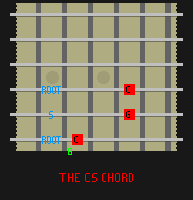
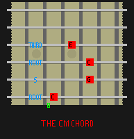
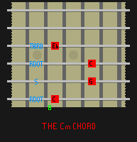
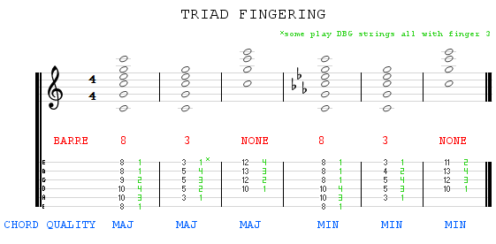

GROWL
I'd rather be playing guitar
 EN
EN
BEFORE YOU START
This article is about applying our basic chord theory knowledge to the guitar. Refer back to this article if you need a refresher.
Two simple rules before you touch the guitar:
- 1. Make a mental effort to only ever have tension in a finger that presses a string. Leave the others loose.
- 2. Unless otherwise directed your chord making hand should arch its fingers so only the fingertips press single strings.
More on this to follow in a photo guide to hand position.
VOICING - a quick intro
Knowing what we know about chord construction, one might be tempted to leap in and start creating guitar chords as stacked thirds. However taking a root, the third above and the subsequent third is actually rare on the guitar. It is often rare on the piano too. On the guitar this is because chords are often "voiced" in other ways. Chord voicing refers to the re-arrangement of the member tones of a chord whilst maintaining the root and the function (eg: major or minor). For example the C major triad C-E-G can become C-G-C-E. It still contains the same notes; C is still the root, but the order has changed.
Also in the C major example above we have "doubled" the tone C. This is very common practice in voicing and although it has an effect it doesn't modify the function of the chord. Doubling is more about the overall emphasis of a chord.
The final voicing issue to cover is omission. There is no rule anywhere that dictates that a chord must contain at least a root, third and a fifth. Fifths are by far the most disposable notes in a chord eg: (the G in C-E-G). Particularly important on the guitar is the omission of the 3rd, leaving just the 1 and 5 of the chord (eg: C-G in C major or G-D in G major). Leaving out the third takes information away. We can't call such a chord major or minor, we just call it C5 or G5 etc. These are common in guitar as they are very easy to play and appear everywhere in pop and rock guitar music; I started with these as a 15 year old Nirvana fan. The removal of the chord root CAN occur too, but that is often in jazz and is an advanced subject for a later article.
NB: Voicing is different from inversion where we change the root.
POWERCHORDS - hit three strings
Let's dive in then with some simple chord construction using omitted 3rd chords a.k.a powerchords or 5th chords. In C major we end up with C-G as our I chord in the key, having dropped the E. Starting at the 8th fret on the low E string of the guitar, this pair of notes is very easy to play with the index and fourth finger. We can add the string above with the fourth or fifth finger to double the C note, giving us a fuller chord (C-G-C). This position in which you find your hand can be repeated anywhere on the E string or A string and will always produce a 5th chord! That's something neat about the guitar. Chords are like templates that you apply by just moving your hand to a new root position and playing. Easy huh?
If you try moving the chord shape around randomly, of course you will find that not all chords generated seem right together. Think on it and you'll realise that to be coherent you need to only play chords with roots found in the key that you are in. So if you're in the key of C, you'll need to move your index finger up two frets to the note D to find the next chord (D5) in the key of C etc.
BARRE CHORDS - hit four+ strings
Powerchords will get you a long way with pop but more sophisticated harmony will use fuller chords, using at least the 3rd. These chords are MUCH harder on your hands and I recommend going easy with them at first. Learn in one place and rest your hand a lot.
Once we introduce the third there are of course two ways of playing a chord, the major way and the minor way. Refer to the theory article if you don't know why a chord should be major or minor. The MOST COMMON way to play a triad major chord on the guitar is voiced like a powerchord with the third added on the next string up (up as in pitch, not fretboard direction). We play that note with the 2nd finger. The chord is now (C-G-C-E).
We know that a minor triad differs only in that its third is a semitone lower with respect to the chord root. So where do you think this is played? Correct, one fret lower than where we play the major third for a triad major chord. The chord is now (C-G-C-Eb). To play this, we don't need the 2nd finger. All we do is lay the index finger flat on the fretboard so it is pressing that 3rd note down as well as the root. We then need to arch the 3 and 4 fingers so only their fingertips press single strings.
Don't worry, this is NOT easy. What you are doing is creating what is called a "barre". A tight hold across the fretboard by the index finger. This is a technique that you will work on for many years as a guitarist. Getting the notes to sound evenly is a product of technique, practice and finger strength. Don't expect it to come easily or quickly and DON'T STRAIN YOURSELF. I will write an article all about barre technique, don't you worry!
These triad chords work as 4 note (so just play the 4 held string) chords. With a degree of experience and strength though you can extend your index finger barre in this same position and produce a fuller chord. This works for both major AND minor triads and is the reason that the guitar is tuned EADGBE. If playing a triad major or minor chord from an E string root note the barre index finger adds a further fifth and then a doubled root note. From an A string root, we get just an added fifth. Why? Well if you think a moment about guitar tuning (EADGBE) the bottom and top strings are the same note (albeit in different registers) and the B is a fifth from E. When you create a barre with your finger you have reduced the length of all the guitar strings by the same amount and have preserved the tuning relationship between the strings. This is why many chords shapes are moveable. Barre versions of C major and minor for E, A and D string roots are shown below along with the usual fingering. These chord shapes can all be moved to different roots to form either major or minor function chords depending on their shape.
Are these triad chords as moveable as powerchords? Yes we can play them at all root notes within a key and get a valid chord for that key; BUT we have to respect the third. Remember from theory that the I chord in C major is a major chord, however the ii chord (D) is minor. Therefore you need the minor version from that root.
PRACTISING
Get these chord shapes into your practice routine, perhaps begin in the key of G as the first chord is nice and reachable on fret 3 of the low E string. Go through each chord in the key, moving up the E string remembering to play major or minor as required. Repeat the exercise but once you get to the IV chord, move to the A string and continue from there. You can't get lost, the V chord root is exactly where you find the fifth of the root chord! ;)
IN CONCLUSION
We've covered first steps in guitar chords as they are commonly used. Voicing means that these chords can be modified or played altogether differently. When you get a tab or chord book however and it calls for a G major chord, these are the ones to use in 90 percent of cases. Get these chord shapes into your practice routine, perhaps begin in the key of G as the first chord is nice and reachable on fret 3 of the low E string. Go through each chord in the key, moving up the E string remembering to play major or minor as required. Repeat the exercise but once you get to the IV chord, move to the A string and continue from there. You can't get lost, the V chord root is exactly where you find the fifth of the root chord! ;)